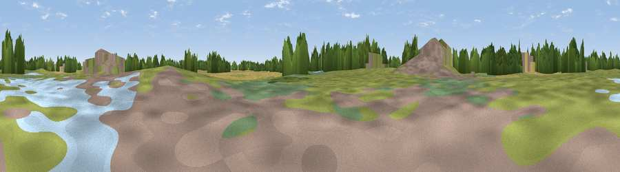

Viewpoint near Stuntney
#45346 in England · top 79% of its area beats it · near StuntneyWhere it is
The exact computed spot (TL 54295 78586). Click the marker for map links.
The view, rendered

A 360° render of this exact spot computed from the terrain model, tree cover and land cover — summer colours, afternoon light, calibrated against photographs of famous viewpoints. Real trees, hedges and buildings will differ in detail.
The panorama
Grey silhouette: terrain skyline in each direction (720 bearings, Earth curvature and refraction included). Dashed green: skyline with trees (+15 m) and buildings (+8 m) as obstacles. Blue strip: how far the ground is visible on each bearing.
Where the view opens
Wedge length = distance to the farthest visible ground on that bearing (vegetation-aware). Rings at 10, 25 and 50 km.
What fills the view
42% grassland · 18% woodland · 18% built-up · 16% cropland · 5% wetland ·
Angular shares of the visible panorama (visual magnitude), not map area. Landscape diversity 0.63 (0–1 Shannon).
Key numbers
More beautiful places nearby
The staircase of upgrades: each row has a higher view potential than everything closer. Driving times are estimates from straight-line distance, calibrated against real road routing — check an actual route before setting out.
| Place | Direction | Drive | Score |
|---|---|---|---|
| "Division Bell" view of the Cathedral | NNE · 1 km | ~3 min | 21.7 |
| Sustrans waymark | S · 1 km | ~3 min | 21.9 |
| Mill Mound | NNE · 2 km | ~6 min | 30.9 |
| Haddenham village | WSW · 8 km | ~17 min | 34.6 |
| Viewpoint near Teversham | SSW · 24 km | ~39 min | 46.7 |
| Cambridge high point | SSW · 24 km | ~40 min | 49.2 |
| Viewpoint near Stapleford | SSW · 26 km | ~42 min | 54.8 |
| Viewpoint near Middleton | NNE · 39 km | ~58 min | 56.5 |
52.38357, 0.26563 · source: osm viewpoint · position refined by local search. Computed location — check access rights before visiting.